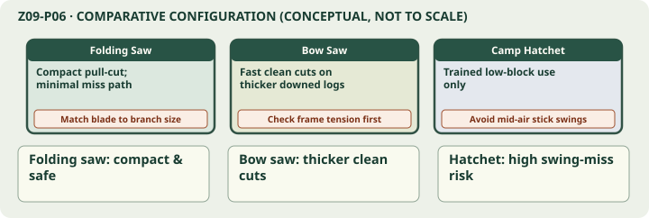

Z09-P06 · Tools and construction · New manuscript
Compare folding saws, bow saws and camp hatchets safely
Select efficient wood-processing tools while minimizing glancing-blow and fatigue injuries in camp.
When it applies · Processing small lawful downed deadwood for permitted campfires or temporary emergency windbreaks.
Equipment · Pull-cut folding saw, lightweight bow saw or properly maintained camp hatchet with sheath.

Actions
- Prefer a sharp folding saw or bow saw for cross-cutting dead branches up to wrist thickness—saws cut cleanly with far less calorie burn and no high-energy swing miss path.[K03, K05, ED]
- Recognize that bow saws handle thicker downed logs efficiently with replaceable blades, yet frame tension and blade alignment must be checked before every cut.[K03, K04, ED]
- Reserve hatchets and short axes for trained operators working on a low solid chopping block; short-handled hatchets easily deflect into knees or shins when swung at mid-air sticks.[K03, K02, ED]
Failure recognition · Trying to hack springy wrist-thick dead branches with a short hatchet held in one hand while steadying the stick with the other hand inches away.[K02, K03]
Verify · Confirm the selected tool matches wood diameter, operator training and safe cutting support before starting.[K01, K03, ED]
Stop or change course · Put away swinging tools immediately if footing is icy, lighting is dim or hands grow cold and clumsy; switch to a saw or no-cut deadfall gathering.[K03, K08, E06]
Evidence and editorial notes
- E06 · CDC · Preventing Hypothermia (current web edition)
- Section: Recognizing and treating hypothermia · Conditions: Cold wet exposure; signs such as confusion, slurred speech, fumbling or drowsiness
Support: Suspected hypothermia warrants prompt help and protection from further cooling. It can occur above freezing if wet or chilled.
Limitations: Early mild shivering can mask rapidly worsening judgment impairment. · Conflicting evidence: None; aligns with ARC and WMS guidance.
Editorial note: Anchors exposure-to-medical escalation thresholds. · Specialist reviewer: Wilderness medicine
Primary source · checked 2026-11-24 - K01 · OSHA · Hand and Power Tools Safety and Health Topics (current web edition)
- Section: Hand Tools > General Safety Rules · Conditions: Use of knives, saws, axes, hammers and hand tools
Support: Keep hand tools in good condition, use the right tool for the job, examine each tool for damage before use, operate according to instructions and wear appropriate personal protective equipment.
Limitations: General occupational rules do not replace task-specific forestry or field-tool training. · Conflicting evidence: None; baseline tool safety framework.
Editorial note: Anchors tool selection, pre-use inspection and operating boundary cards in Z09. · Specialist reviewer: Tool safety and occupational safety
Primary source · checked 2026-11-24 - K02 · OSHA · Hand and Power Tools (OSHA 3080) (agency PDF)
- Section: Hand Tools > Knives, Chisels, Impact and Wrenches · Conditions: Manual cutting, striking and prying operations
Support: Direct cutting blades away from the body and bystanders, never use cracked wooden handles or mushroomed striking heads, and do not substitute wrenches or blades as pry bars.
Limitations: Does not specify material tensile ratings for improvised handles. · Conflicting evidence: None; directly informs safe cutting and impact-tool failure cards.
Editorial note: Prevents blade slip, splintered-handle and spalling-metal injuries. · Specialist reviewer: Tool safety and wilderness medicine
Primary source · checked 2026-11-24 - K03 · USDA Forest Service · Handtools for Trail Work (0523-2810-MTDC) (agency handbook)
- Section: Tool Selection, Inspection and Safe Transport · Conditions: Trail and campsite hand tools (axes, saws, shovels, pulaskis, wedges)
Support: Inspect handles for splits, loose heads and secure wedges before every use; sheath sharp edges during carry and maintain a clear work circle around swinging tools.
Limitations: Forestry guidelines apply to maintained commercial tools; improvised stone or salvaged blades carry higher failure risk. · Conflicting evidence: None; aligns with OSHA-3080.
Editorial note: Grounds woodworking, swinging-tool clearance, carrying and maintenance cards. · Specialist reviewer: Forestry tool safety and trail maintenance
Primary source · checked 2026-11-24 - K04 · USDA Forest Service · Handtools for Trail Work (0523-2810-MTDC) (agency handbook)
- Section: Sharpening, Filing and Handle Maintenance · Conditions: Maintaining cutting edges and wood tool handles in field or shop
Support: Secure the tool firmly before filing or honing, keep fingers behind file guards, preserve factory bevel geometry without overheating steel and replace loose or cracked handles rather than taping them.
Limitations: Field touch-up honing does not correct chipped, cracked or heat-annealed steel blades. · Conflicting evidence: None; separates routine edge maintenance from unsafe handle patching.
Editorial note: Guides sharpening, rust prevention and handle-failure retirement cards. · Specialist reviewer: Tool maintenance and forestry safety
Primary source · checked 2026-11-24 - K05 · USDA Forest Service · Handtools for Trail Work PDF (agency PDF)
- Section: Sawing, Splitting and Lever Principles · Conditions: Cutting downed wood, clearing deadfall and moving heavy logs safely
Support: Assess bind and tension in fallen logs before cutting so saws do not pinch or limbs spring back; use solid levers and fulcrums safely without standing in the recoil path of strained timber.
Limitations: Complex storm-damaged or hung-up trees require professional sawyers and are outside camp tool scope. · Conflicting evidence: None; informs spring-pole, saw-bind and lever mechanical-advantage cards.
Editorial note: Prevents kickback, saw pinching and recoil injuries in Z09. · Specialist reviewer: Forestry tool safety and mechanical safety
Primary source · checked 2026-11-24 - K08 · OSHA · Hand and Power Tools (OSHA 3080) (agency PDF)
- Section: Personal Protective Equipment and Work Area Control · Conditions: Cutting, splitting, striking and rigging operations
Support: Maintain stable footing, eye and hand protection appropriate to flying chips or snapped cordage, and clear bystanders outside the swing or snap-back zone.
Limitations: Field kits often lack shop PPE, requiring slower conservative technique and lower-energy methods. · Conflicting evidence: None; drives snap-back and work-circle exclusion zones in Z09.
Editorial note: Enforces conservative work circles and snap-back clearance. · Specialist reviewer: Tool safety and occupational safety
Primary source · checked 2026-11-24
Source lineage · USFS trail handtools; new manuscript · Classification · New manuscript.